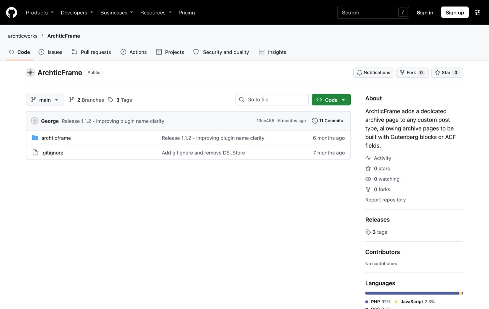

ArchticFrame
A WordPress plugin that makes archive pages editable. Editors build them with Gutenberg blocks or ACF instead of waiting for a developer to change theme files.
- Type
- WordPress plugin, open source
- Built with
- PHP, Gutenberg, ACF
- Status
- Published, version 1.1.2
- My role
- Designed and built by me
The problem
Archive pages belong to the theme, not the editor
In WordPress, the archive for a custom post type, such as a Projects or Services page, is controlled by theme templates. An editor cannot change its intro, layout or content without a developer editing theme files.
Archive pages were always a pain. They were either a theme template, a theme option or a normal page, and each has a drawback. A normal page is flexible, but a custom post type cannot have a unique page standing in for its archive. Theme options and templates are harder to find and edit, and a page can get lost in a long page list.
I build custom WordPress sites for a living, so this is a problem I know well. ArchticFrame combines the flexibility of a normal page with the native archive behaviour, and keeps the archive pages together in one easy-to-find place. The archive keeps its normal loop and functionality, so custom blocks and ordering are added without replacing it.
How it works
An archive page you can edit like any other
- ActivateInstall and activate the plugin.
- EnableIn Archive Pages → Settings, switch on a custom post type.
- Auto-createThe plugin creates an Archive Page and links it to that post type's archive.
- EditBuild the page with Gutenberg blocks or ACF fields.
- RenderShow the content in the archive template, above or around the post listing.
In the wild
Published and open source


Breakdown
What's inside
Archive Pages as content
A dedicated internal post type holds the content for each enabled archive, so editors manage it in the admin like any other page. The plugin handles the link to the archive URL.
Safe template fallback
It looks for archtic-{post_type}.php, then archtic.php in the theme, then falls back to its own template. Developers keep full control and editors always get something working.
Helper functions
archticframe_id(), archticframe_title() and archticframe_field() let theme developers use the archive's content and ACF fields without querying it directly.
A listing shortcode
[archtic_listing] lets editors place the real post listing inside the page they are building, with options for count, which parts to show, button text and linking.
Styleable output
The listing outputs a predictable set of classes, such as .archtic-grid and .archtic-item__title, so any theme can style it.
Honest about sanitising
The fallback template sanitises output the standard WordPress way, which can strip unusual markup. The documentation says so and points to the two ways around it.
Insights
What I decided
Give editors the content, leave developers the layout
The editable part is the content, and the theme still decides how the archive looks. That keeps the plugin useful to both sides without turning it into a page builder.
A safe default, with an escape hatch
The plugin works with no theme changes, and any theme can override it with a template file when it needs full control.
Document the limits
Where the default sanitising can surprise someone, the docs say so and show how to extend the allowed markup.
It started as something I used on my own sites. I first built it roughly, from code snippets, including old ones from Stack Overflow, pieced together and adapted. Then I used AI to make it more efficient and to put my improvements into action. I uploaded it to the WordPress plugin directory for ease, and to challenge myself to make it properly.
The hard part
Making it directory-ready
Writing code for yourself is easy. Making it as clean and tight as the WordPress plugin directory requires was the real challenge, and it taught me to write cleaner code for the directory and for production.
My first approach, making the archive pages as pages inside the custom post type, did not work, because a custom post type cannot have a unique page for its archive. That is why the plugin uses a dedicated internal post type to hold the content instead.
Checking it
How I tested it
I tested it before release and cleaned the code up to meet the WordPress.org directory's requirements. The listing says it is tested up to WordPress 6.9.
What I left out, and what's next
I left out taxonomy term pages. They are more project-specific, so they were not needed for now, but I may add them later.
- Add the taxonomy term pages and sync them up with the archive pages.
- It is early: fewer than 10 active installs and no reviews yet, and so far it is mostly me using it. I have not promoted it yet, so the next step is getting it in front of more sites.